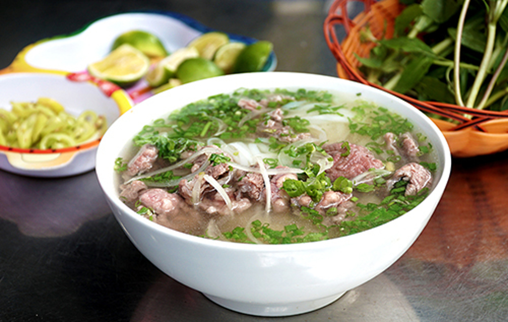
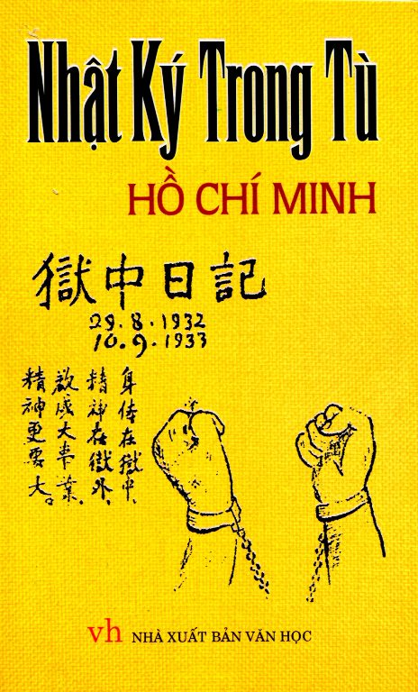
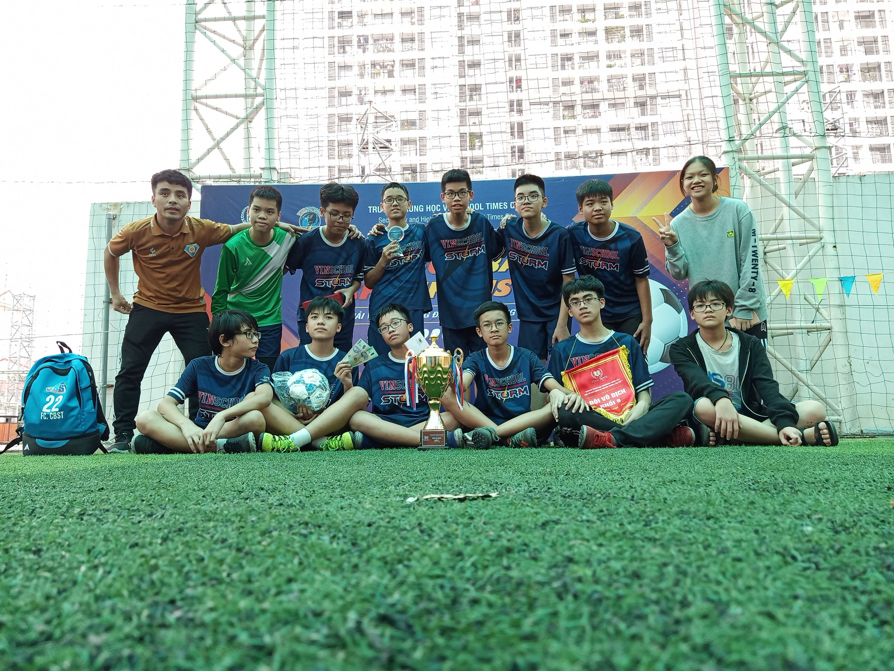

-
H i , I ' m N h a t T h i s i s M y F a v o r i t e W e b s i t e !
My Favorite Food
Vietnamese Pho

Pho is one of my favorite dishes. Pho is the foremost well known and extraordinary food in my country, Vietnam. There are two main kinds of Pho: Pho with beef and Pho with chicken. Pho is served in a bowl with a particular cut of white rice noodles in clear beef broth(steak, greasy flank, incline flank, brisket), with thin slices of beef. Chicken Pho is made by using the same flavors as beef Pho, but the broth is made utilizing as it were chicken bones and meat, as well as a few inside organs of the chicken, such as the heart, the undeveloped eggs and the gizzard. I frequently appreciate a bowl of hot and zesty Pho for breakfast. Mornings are best time for pho in Vietnam. I adore Pho and I can eat it each morning without boring.
My Favorite Book
Prison Diary

Introduction: Prison Diary is a collection of 134 poems in Chinese characters in the form of Tang Lu composed by Ho Chi Minh during
the time he was imprisoned by the Chiang Kai-shek government in Guangxi, China, from August 29, 1942 to September 10,
1943. In addition, the last part of the document is a book-reading pen and a newspaper-reading pen, which summarizes
important information about contemporary politics, military, international culture and Vietnam.
Feeling: Born into the author's reluctant circumstances (imprisoned) but actually when I read the book, I did not see Uncle Ho's
pessimism, depression or lamentation. Uncle calmly wrote poems that were beautiful, modern and above all filled with
thoughts and ideas towards the Revolution, towards the inevitable future, towards people in the same situation. How
admirable it is to be in such a dark and humiliating situation and still maintain Ho Chi Minh's personalities. This poetic diary
has demonstrated the qualities of a talented artist in Uncle Ho, as well as the indomitable and resilient spirit that
not everyone has and can keep.
Author
Ho Chi Minh

My Favorite Sport
Football

My favourite sport is playing football. I often play football in my spare time. After completing my homework at home, I generally spend a lot of free time playing football. I was so interested to play football from my childhood however started learning to play well when I was 8 years old. I was in one class when I was 5 years old. My father asked my class teacher in the school about my hobby of football. And my teacher told him that there is a facility for playing sports daily in the school from class 1 so you can admit your child. By the time, I really enjoy playing football and participating in inter-class competitions.
My Favorite Player
Cristiano Ronaldo
Cristiano Ronaldo dos Santos Aveiro (Cristiano Ronaldo) was born on 5 February 1985 in Funchal, Madeira, Portugal into a very poor family. The poverty made his life very hard. His father, José used to work as a gardener and kit man in a football club on a very low pay. Ronaldo worked as a kit man was to supply kits to football players and clean their rooms. And now he is one of the best football player in the world with nearly 800 career goals, 30 trophies, five Ballons d'Or.